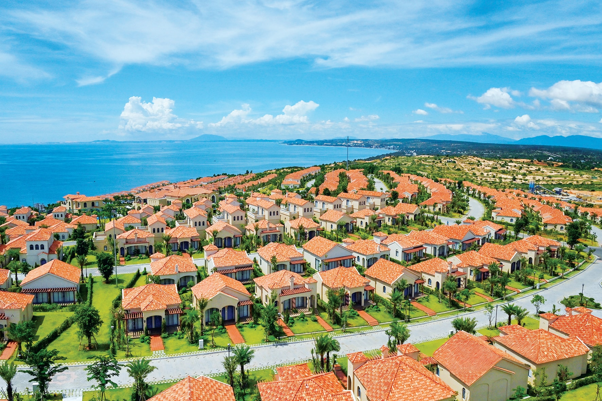
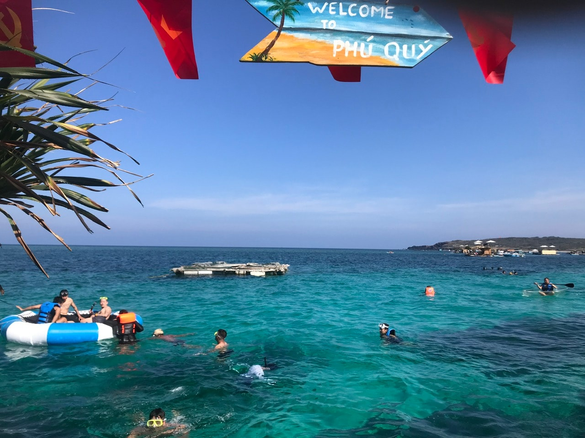
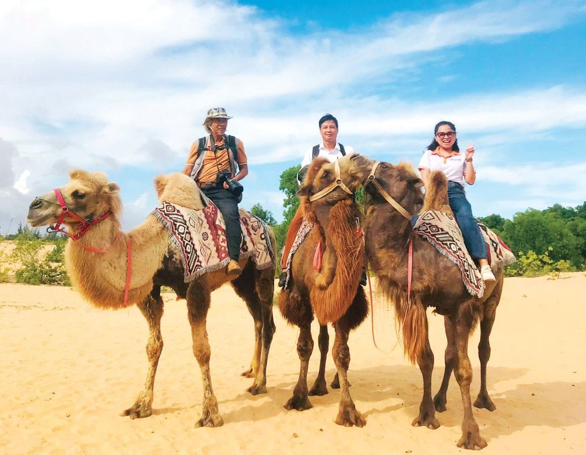

Ngày 24/10/1995 đã ghi dấu ấn không thể nào quên đối với ngành du lịch Bình Thuận trước đây, khi sự kiện được cả thế giới quan tâm diễn ra tại Phan Thiết - vùng đất duyên hải cực Nam Trung Bộ còn giữ nét hoang sơ và ngập tràn nắng gió.
Đó là hiện tượng thiên nhiên nhật thực toàn phần hiếm gặp, nên thu hút đông đảo du khách lẫn nhà đầu tư khắp nơi tìm đến chiêm ngưỡng cũng như lần đầu khám phá vùng biển thơ mộng có những rặng dừa xanh ngắt, nhiều bãi cát dài miên man… Để rồi không lâu sau, tiềm năng nơi đây dần được đánh thức và mở ra cơ hội thấy rõ cho du lịch địa phương, dù “sinh sau, đẻ muộn” nhưng vẫn có những bước tiến vượt bậc.
Cũng từ đây, cột mốc 24/10/1995 được chọn là sinh nhật của ngành du lịch Bình Thuận, bắt đầu cho hành trình vươn mình thành “điểm sáng” trên bản đồ du lịch Việt Nam. Bởi chỉ thời gian ngắn sau đó - tức những năm đầu thế kỷ 21, giới chuyên ngành không khỏi ngạc nhiên và nhìn nhận trên dải đất hình chữ S, không có địa phương nào đón làn sóng đầu tư du lịch bùng nổ như nơi đây…
Với bờ biển dài 192 km, điểm đến Lâm Đồng biển xanh khi đó đã thu hút hàng loạt dự án đầu tư phục vụ phát triển ngành “công nghiệp không khói”. Không chỉ tập trung tại Phan Thiết với tuyến du lịch trọng điểm Hàm Tiến - Mũi Né được mệnh danh là “thủ đô resort” đầu tiên ở Việt Nam, mà còn trải dài đến hầu hết các huyện, thị ven biển trong tỉnh.

Địa bàn Lâm Đồng biển xanh có thế mạnh về nghỉ dưỡng cao cấp. Ảnh: Đình Hòa
Chuyển mình vươn lên mạnh mẽ, địa bàn Lâm Đồng biển xanh không những khẳng định điểm đến mới nổi, mà còn tự tin phối hợp tổ chức thành công nhiều sự kiện mang tầm quốc gia và thế giới. Có thể kể đến: Giải lướt ván buồm Cúp Thế giới PWA Mũi Né - Việt Nam, Festival Thuyền buồm quốc tế Mũi Né - Việt Nam, Lễ hội Khinh khí cầu quốc tế Việt Nam lần thứ I, Vòng thi Hoa hậu Trái đất thế giới…

“Đảo ngọc” Phú Quý luôn hấp dẫn du khách đến khám phá và trải nghiệm
Hội tụ phát triển trong giai đoạn mới
Trước thời điểm sáp nhập tỉnh, khu vực Lâm Đồng biển xanh thu hút 372 dự án du lịch còn hiệu lực (có 21 dự án đầu tư nước ngoài) với tổng vốn đăng ký 1.322.338 tỷ đồng, trong đó hơn 210 dự án đã đi vào hoạt động. Qua rà soát, ngành du lịch cho biết, trên địa bàn có gần 680 cơ sở kinh doanh lưu trú với tổng số 20.960 phòng, trong khi cơ quan thống kê ghi nhận nơi đây đón lượng khách dịp đầu hè 2025 đã vượt 1 triệu lượt/tháng.
Tính chung nửa đầu năm nay, điểm đến Lâm Đồng biển xanh đón gần 5,54 triệu lượt khách (tăng 18,48% so cùng kỳ) và đạt doanh thu khoảng 15.040 tỷ đồng (tăng gần 20%). Dự kiến cả năm phấn đấu thu hút hơn 11 triệu lượt khách cùng tổng doanh thu từ hoạt động du lịch trên địa bàn chạm mốc 28.200 tỷ đồng…
Với sự trưởng thành ở tuổi 30, điểm đến Lâm Đồng biển xanh tiếp tục bước vào giai đoạn mới khi hội tụ tiềm năng, lợi thế để góp sức đưa du lịch tỉnh nhà trở thành trung tâm du lịch chất lượng cao của cả nước. Bởi vùng đất này có nhiều cảnh quan nổi tiếng như: Đồi cát bay Mũi Né, Suối Tiên, Bàu Trắng, Mũi Kê Gà, Thác Bà, Bãi đá Bảy màu… và đặc biệt là “đảo ngọc” Phú Quý, Khu bảo tồn biển Cù Lao Câu.
Hay như sở hữu đa dạng tài nguyên nhân văn: tháp Chăm Pô Sah Inư, Trường Dục Thanh (nơi Bác Hồ dừng chân dạy học), vạn Thủy Tú (với bộ xương cá voi lớn nhất Đông Nam Á), núi thiêng Tà Cú (có tượng Phật Thích Ca nhập niết bàn dài 49 m)… Cùng với đó là nhiều lễ hội truyền thống đặc sắc, góp phần thu hút du khách: Lễ hội Katê của đồng bào Chăm, Lễ hội Nghinh Ông Quan Thánh của cộng đồng người Hoa, Lễ hội Cầu ngư đặc trưng của người dân miền biển, Lễ hội Dinh Thầy Thím…

Du khách trải nghiệm dịch vụ cưỡi lạc đà trên đồi cát tại Bàu Trắng
Đồng thời phấn đấu đưa tỉnh Lâm Đồng trở thành trung tâm du lịch sinh thái, nghỉ dưỡng cao cấp, văn hóa - trải nghiệm đa dạng, gắn kết hài hòa giữa biển - rừng - cao nguyên đặc sắc và có sức hấp dẫn tầm quốc gia lẫn quốc tế… Song trước mắt, toàn ngành sẽ nỗ lực hoàn thành các chỉ tiêu cơ bản trong năm 2025. Đó là thu hút trên 23 triệu lượt khách đến tham quan, nghỉ dưỡng (riêng khách quốc tế đạt 1,3 triệu lượt) và tổng doanh thu từ hoạt động du lịch khoảng 46.000 tỷ đồng.
Nguồn: Báo Lâm Đồng - baolamdong.vn - Ngày đăng 24/10/2025
.jpg)
.jpg)
.jpg)
.jpg)
.jpg)
.png)